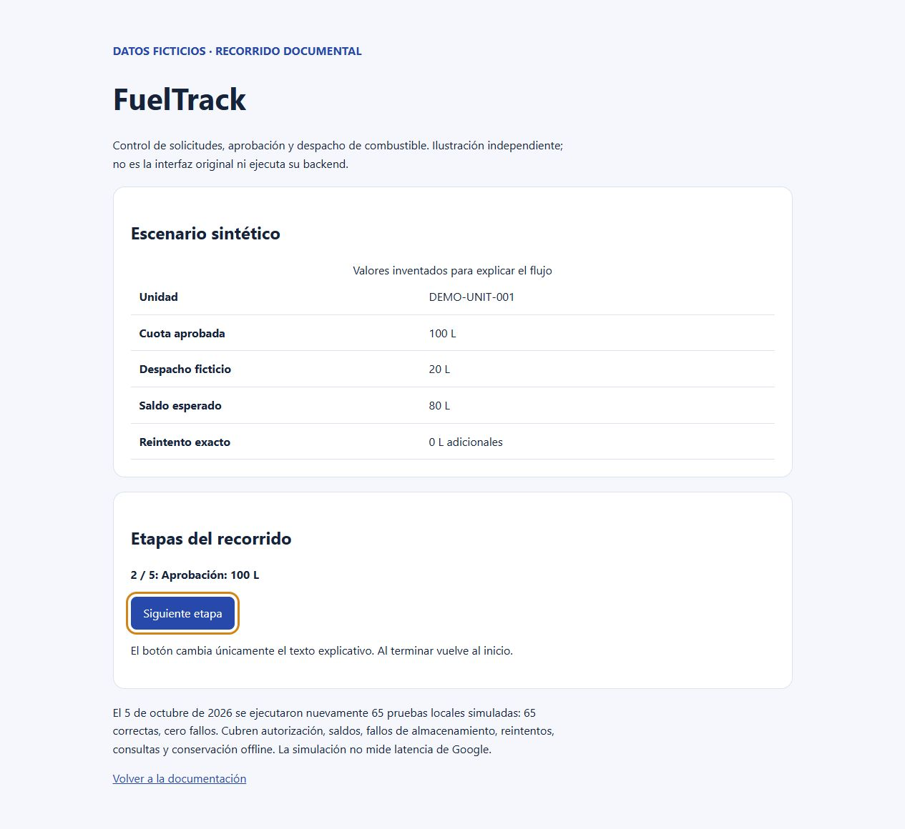

PROYECTO DESTACADO · ANÁLISIS DE DATOS Y AUTOMATIZACIÓN
FuelTrack
65 pruebas locales simuladas correctas (evidencia histórica). Caso documental y recorrido interactivo con datos ficticios publicados.
Problema operativo
Coordinar solicitud, aprobación administrativa de cuotas y despacho de combustible en campo sin dobles cargos.
Solución técnica
Flujo en GAS y Sheets con bloqueo concurrente, claves de idempotencia y cola offline en IndexedDB mediante PWA.
Tecnologías observadas
- Google Apps Script
- Google Sheets
- IndexedDB
- PWA
Evidencia verificable
65 pruebas simuladas históricas (autorización, saldos, fallos y reintentos). Ejemplo público: coherencia aritmética y valor esperado de 0 L adicionales en escenario sintético.

Alcance, límites y próximos pasos
Integración en cuentas activas de Google, permisos y dispositivos en campo pendientes. El ejemplo público es sintético y no valida el mecanismo operativo de idempotencia ni ejecuta peticiones reales.
No se atribuyen métricas cuantitativas no medidas ni autoría exclusiva de componentes no acreditados. El repositorio documenta la aportación verificada y sus límites.
Ver repositorio y documentación técnica (abre en otra pestaña) ↗
Leer caso de estudio completo en GitHub (abre en otra pestaña) ↗